Jira
5종목 · 작업 76개 · PR 358개
목적과 달성 조건부터 적었다
PR마다 Jira 번호이재엽
총괄 · AI
고한결
인터뷰 · 설문 · 사용자 테스트
임유정
시연 화면 · 코드 점검
두승현
작업실 개편 · 검증
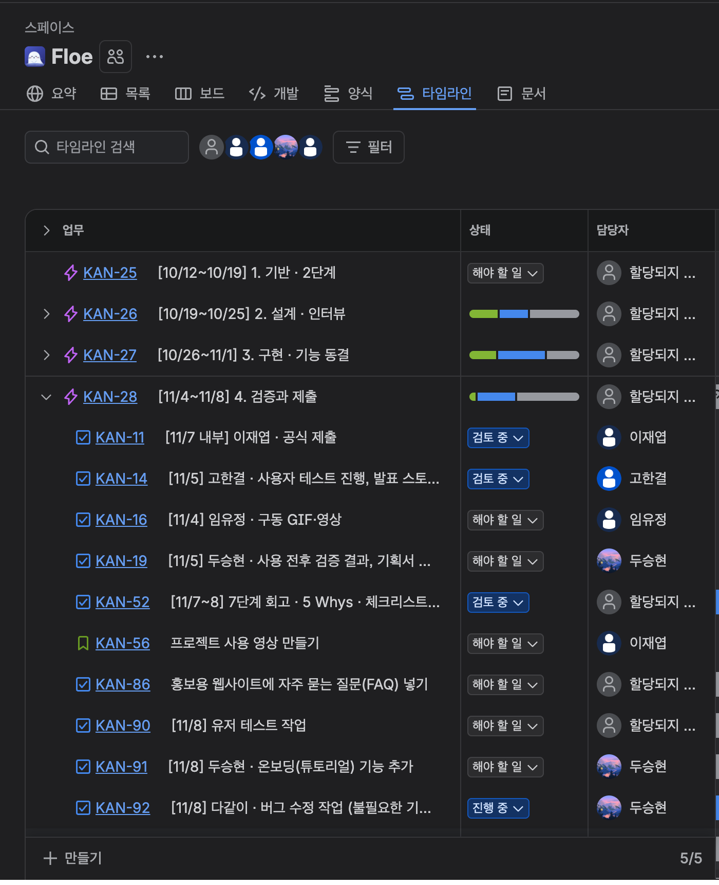
What ③ 책은 어떻게 만들어지나

협업 — 목적 · 역할 · Jira
Jira
5종목 · 작업 76개 · PR 358개
목적과 달성 조건부터 적었다
PR마다 Jira 번호
아이디어
9월
게임 → 길잡이
재미보다 '목적'과 '다음'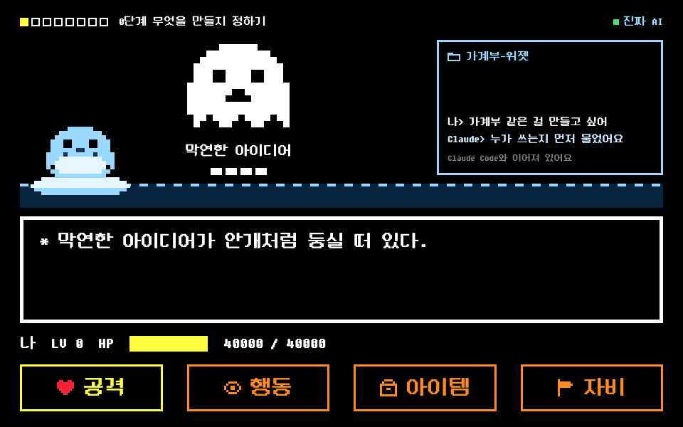
프리 프로토타입
10/12 ~ 10/25
흐름을 그리고, 멘토링으로 고침
8단계로 준비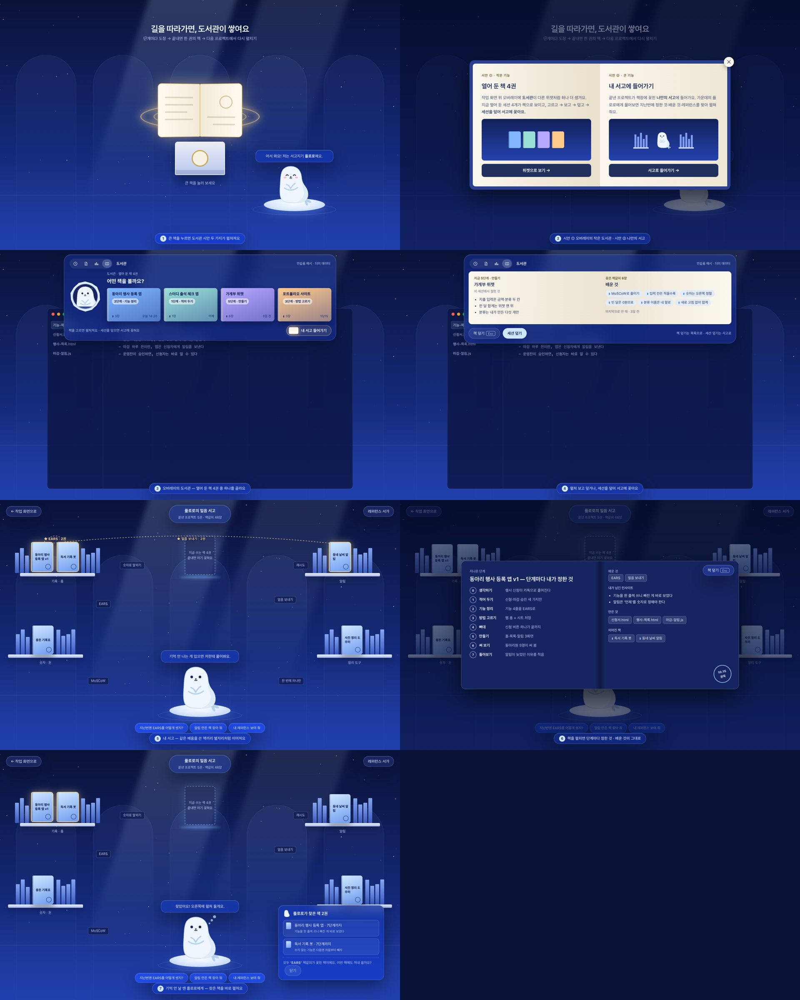
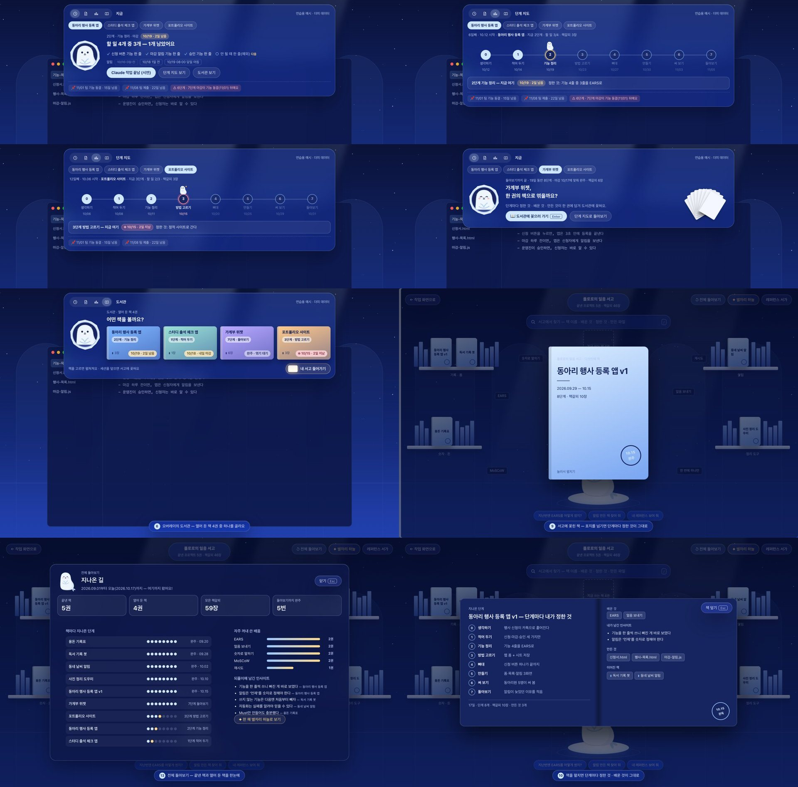
프로토타입
10/26 ~ 11/1
핵심 기능만 만들기
앱 11.0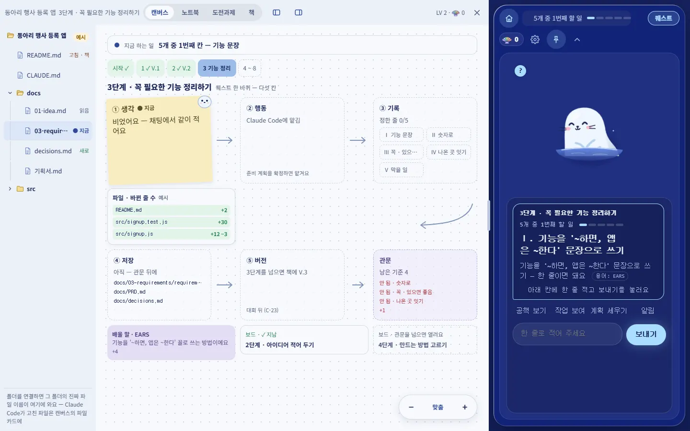
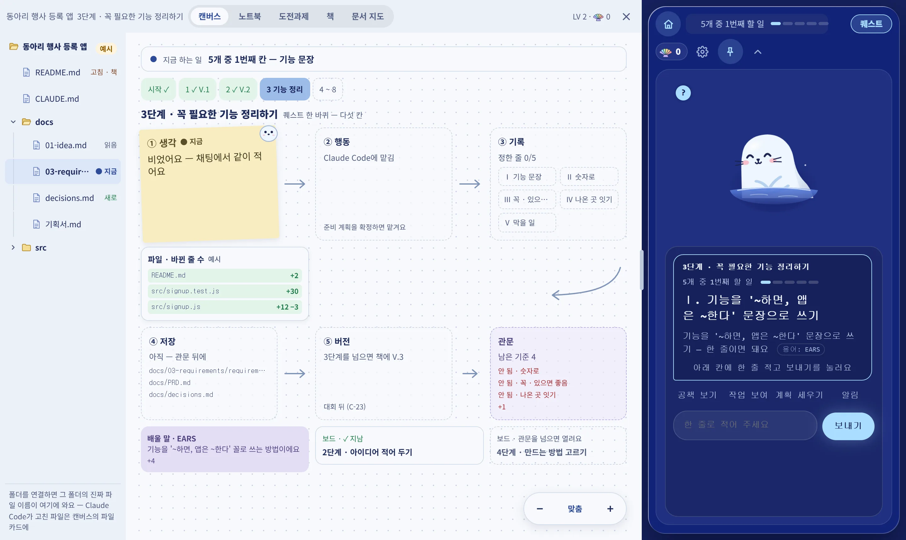
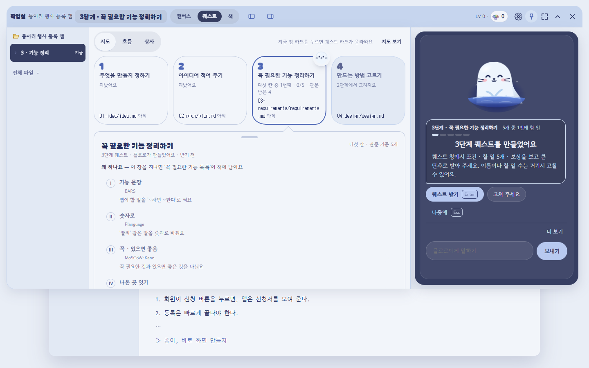
시연
11/2 ~ 11/7
AI 연동부터 지도까지 끊김 없이
앱 11.3 · 시연 영상
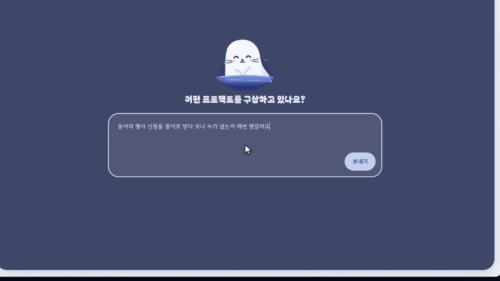

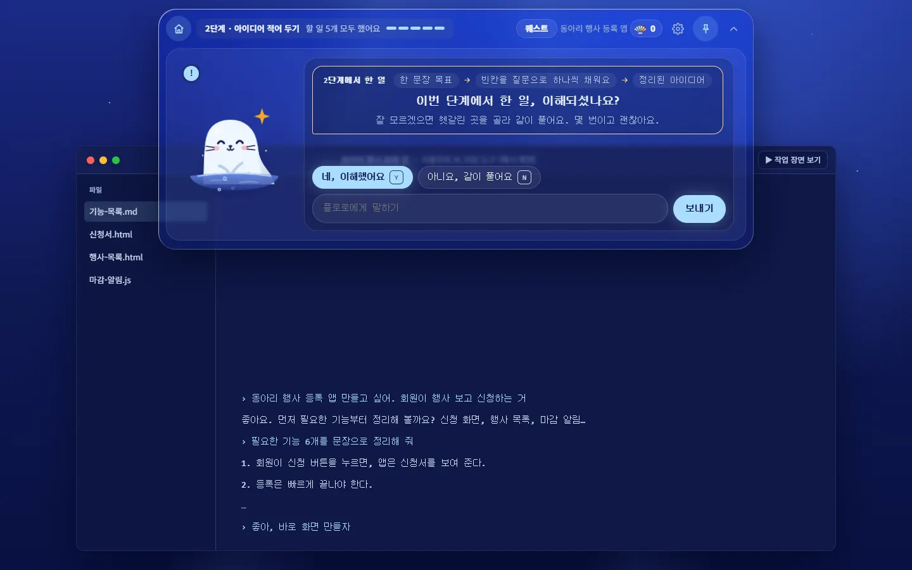
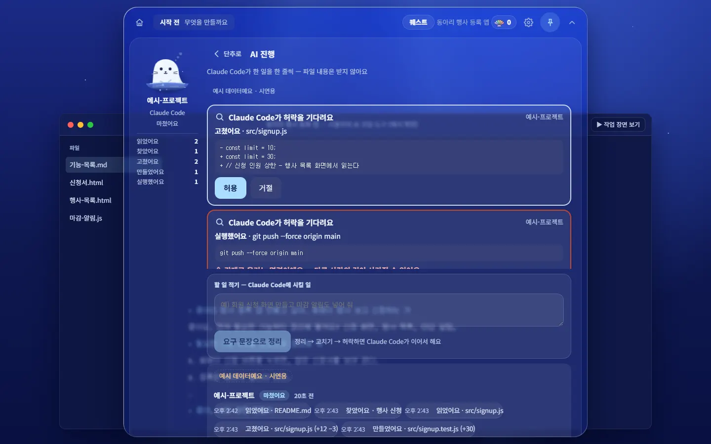
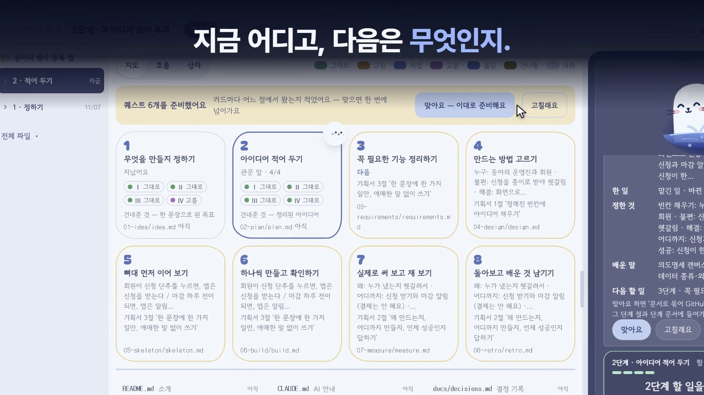
결과
11/7
목적 → 관문 → 까닭
최종 앱 · 한 권의 책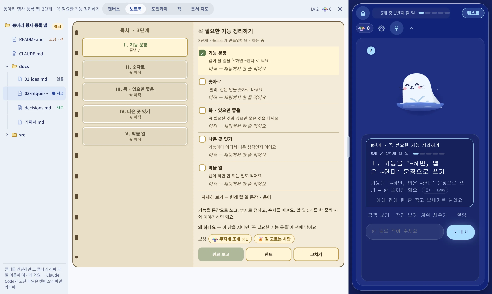